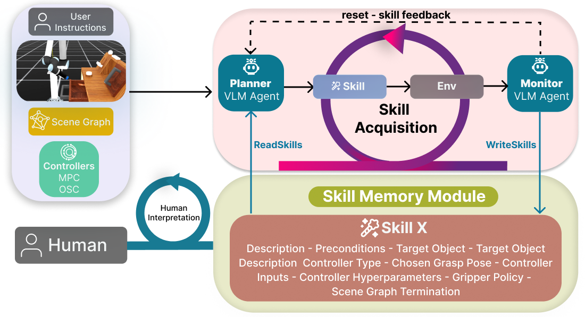

From Exploration to Reuse: An Embodied Agent Framework for Manipulation Skill Learning

MARS Architecture.
Abstract
Recent advances in Vision Language Models (VLMs) have enabled agentic robotic frameworks capable of interpreting natural language instructions and generating robot commands in the task-level space or the joint-level space. However, existing approaches predominantly rely on either zero-shot execution with no modular skill reuse methods or task-specific policy learning that must be retrained for each new behavior. In this paper, we propose an embodied dual-agent architecture that allows agents to acquire new skills by exploring inputs and hyperparameter spaces of model-based controllers and reusing successfully learned skills through a memory skill module in future tasks. The exploratory behavior is enabled through the interaction between VLM planning and monitoring agents, where the former determines a long-term plan and suggests the next skill and the latter explores skill changes that can lead to task success. Thus, we call this framework Model-based Acquisition and Retrieval of Skills (MARS). We showcase MARS across different embodiments in simulation and real-world through a variety of prehensile and non-prehensile, short and long-horizon tasks. Ablation studies on multiple embodiments in real-world and simulation show that the monitoring agent improves success rates from 25% to 77%, while decreasing the number of trials till task success from 6.25 to 1.5. While the skill memory module improves success rates from 39% to 70.5%. The skill memory also allows transferring skills to new objects by reusing strategies learned from previous interactions.